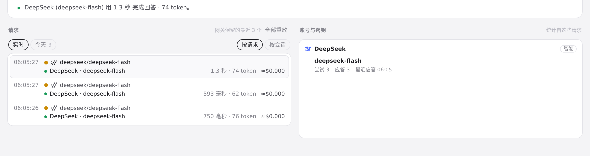
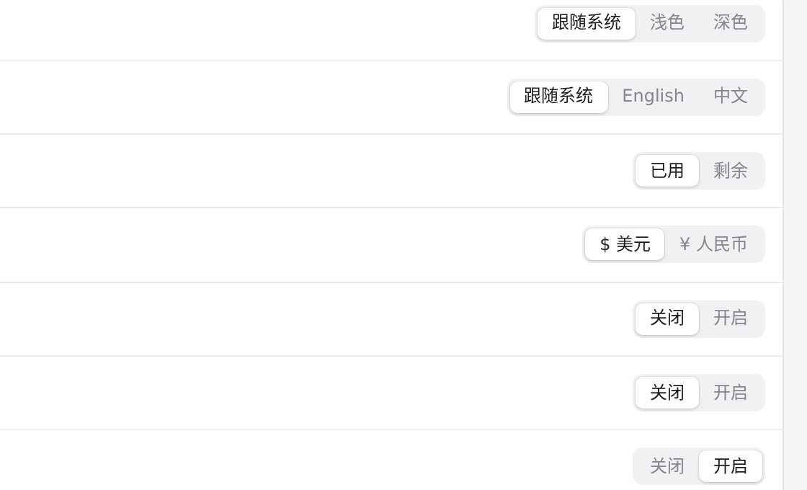
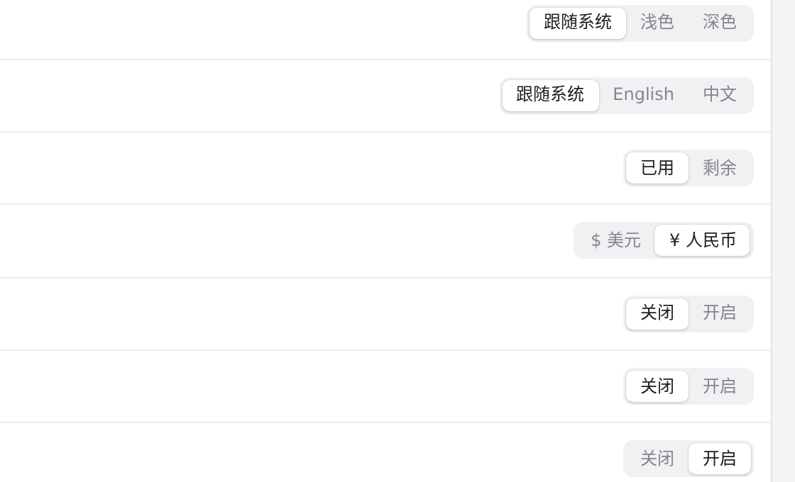
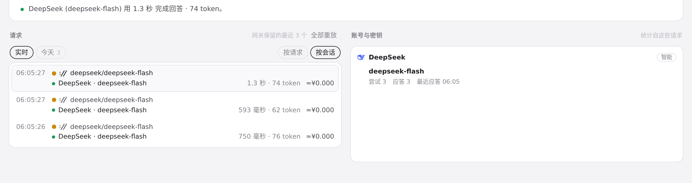

#396 界面预览
commit 2dddcd5 · 回到 PR · 在「路由」页的请求列表上加了「按请求 / 按会话」切换和按会话分组的标题行（Agent·会话名、请求数/token/进行中、会话估算合计），并给每条请求的 meta 加上按有效价格估算的费用（含缓存读写，货币切换后重绘）；后端把这些请求的会话 ID、父会话和 token 分档写进路由历史与 trace，并新增按 ID 读取 Codex 本地会话名的接口。
红线是鼠标走过的轨迹，红色圆环是一次点击；底部文字是这一步在做什么。空格暂停，← → 逐段查看。
路由请求列表：分组切换与每条请求的估算费用 · 路由页的请求列表：默认分组方式，以及每条请求右侧的费用

路由请求列表：分组切换与每条请求的估算费用 · 「按请求」下的请求列表
路由请求列表：分组切换与每条请求的估算费用 · 「按会话」下的请求列表

切换货币后路由估算费用的重绘 · 设置里的货币，当前为美元

切换货币后路由估算费用的重绘 · 货币为人民币时的设置

切换货币后路由估算费用的重绘 · 人民币下路由请求列表里的费用